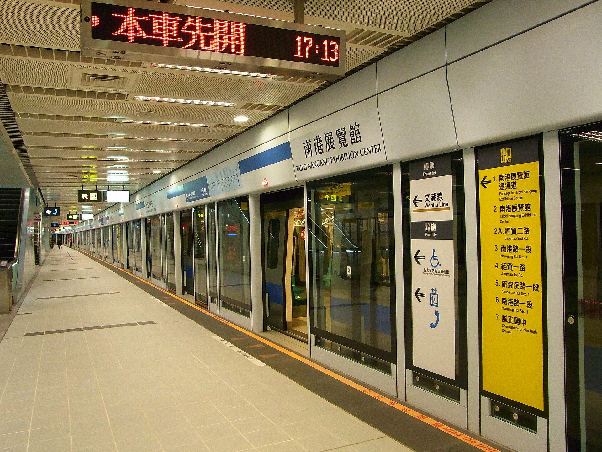

捷運列車為什麼每次都能對準月台門？
進站停準只是一半；列車真的停住、停對位置、能開哪一側門，還要逐項確認。
捷運進站，車門在月臺門後面停下，幾秒後兩道門打開。平常我們把這看成一個連續動作；只有停偏、等了一會仍不開門時，才會注意它其實是兩個問題：列車怎麼停在指定位置，以及誰能確認現在可以開門。自動停車負責把誤差壓小，安全確認則決定誤差與狀態是否可以接受。分清兩者，才不會把「有電腦控制」誤解成每次必然零誤差。

一、離停車點多遠，決定現在該有多快
台北市捷運工程局《捷運號誌系統實務》介紹高運量系統的程式化月臺停車曲線：它描述距離停準點不同位置時，列車應如何減速。列車經過道旁信標，便能更新相對於月臺的位置，配合速度資訊調整煞車[1]。這不是駕駛照一張時刻表盲目等候，也不是到站才突然下達停止命令。
可以把它想成一個持續重算的問題：目前還有多少距離、目前有多快，接下來的控制要怎麼改，才能在允許範圍內停住？這是幫助理解的簡化，不是實際控制程式公式。重點在回授：同一條目標曲線，遇到的車速及位置不同，當下需要的動作就不同。
專書也描述滑行、速限變化與過站不停指令等情境。它提醒我們，進站不是一條與其他條件隔絕的固定劇本；停車功能仍要配合安全速度指令及營運模式。
二、ATO 要停得好，ATP 要守住不能做的事
自動列車運轉 ATO 與自動列車保護 ATP 常一起出現，卻不是同一件工作。在所引高運量系統說明中，ATO 執行行駛與停車調整；ATP 涉及速度與停妥等安全條件的確認[2]。為了舒適而減速，與為了防止不安全動作而限制運轉，是彼此配合的兩層。
專書記載的停車確認程序相當具體：車上與道旁定位設備對齊，ATO 持續施加煞車，待列車完全停住，ATP 的零速確認才成立；接著傳遞「已定位、已停住」的訊號，車站設備再送出左側或右側開門指令[6]。這些設備與程序屬於書中描述的系統，不能一概當成所有路線現在使用的硬體。
這段流程回答了一個肉眼看不到的差別：車頭好像停在對的位置，不代表系統已確認零速；零速成立，也不代表任何一側門都能開。位置、速度與門側是不同條件，需要分別確認。
三、三十公分是容許範圍，不是每天的實測誤差
捷運公司現行常見問答寫明，停準點前後各有 30 公分的可容許誤差，也提到雨天等因素可能影響停車準確性[5]。這與工程局月臺門設計說明中的規範互相呼應：停止誤差大於 300 mm 時，滑門不得自動開啟[3]。
但兩個數字不能被誤讀成「每班都差三十公分」，更不是列車靠站誤差的統計分布。它們是在說可接受範圍與控制邊界。若要知道某條路線一年有多少停偏、通常差幾公分，還需要營運量測資料，不能由規範本身代替這種數據。
容許誤差也不是容許不安全。工程上要處理的是，在設備、軌道與運轉條件不可能完全無變動時，哪些狀態仍能完成正常開門，哪些狀態必須轉入另一套程序。
四、超過範圍以後，不是只有「倒退一下」
捷運公司的問答依越位程度列出不同處置：未達一個車門，司機員回報行控中心並獲核准後，可手動開啟月臺門及車門；越位一至兩個車門，可能退回定位，也可能廣播不停本站、到下一站讓旅客下車後改搭反向列車。越位三個車門以上則有不開門續行的程序，終端站、折返站或末班車另有行控指示。
這不是讓乘客自行判斷應要求哪種操作的指南，而是說明：偏移量、所在位置與行車條件會改變可行的恢復方式。列車不是能隨時倒車的獨立物件，它仍在一個有其他列車與行控安排的系統中。
因此，偶爾遇到車停住卻不開門，不能只以「自動化壞了」概括。正常控制未達預期、系統拒絕自動開門、工作人員執行恢復程序，是接續發生而不同性質的事；拒絕動作有時正是在保留安全邊界。
五、門故障時，要能隔離，也要能離開
月臺門設計說明還處理另一種情況：停車位置沒問題，但某一組門故障。文件要求滑門組可個別隔離；若車門已開而滑門故障，須有相應的手動開啟機構；門無法正常關閉時，則要完成必要安全程序，列車才可離站。另有緊急門，供未對準或緊急疏散時使用。
這些設計顯示，自動功能之外仍要有受控的人工途徑。「失效時一律鎖死」和「任何人隨時能開」都太簡單：一方面要防止正常營運時誤開，另一方面又不能在需要離開車廂時沒有出口。誰能操作、在哪一側、用什麼方式，都是設計的一部分。
本文以公開工程文件解釋原理，不取代現場人員指示，也不把不同路線的緊急操作混成一套。乘客看得到相似的門，背後的列車控制世代與設備卻可能不同。
六、真正的自動化，是正常與例外一起設計
舊式高運量控制與文湖線的通訊式列車控制，定位、通訊及設備架構不同，不能因為都會自動靠站就視為同一系統[4]。理解它們不必先記住每個頻率或設備縮寫；先抓住共同的問題：如何知道位置、如何控制速度、如何確認停妥，以及失準時怎麼恢復。
我們日常感受到的「停得剛剛好」，來自這些層次接續完成。工程的目標也不是讓偏差從世界上消失，而是讓正常範圍可運作、超出範圍可被察覺、例外有可以遵循的處理方式。兩道門之間幾秒的等待，正是這整串確認留在旅客眼前的痕跡。
查證資料來源6 項
實際支持文中事實主張的來源，逐條標註支持的內容；文內如有 [數字] 標記，對應此處編號。
延伸探討
把故事帶回自己的思考
如果你在月臺上看到列車停偏、車門沒有開，會怎麼分辨「停車控制沒有達標」與「安全確認正在阻止下一個動作」？在其他自動系統裡，你希望哪些拒絕操作的原因能被清楚說明？